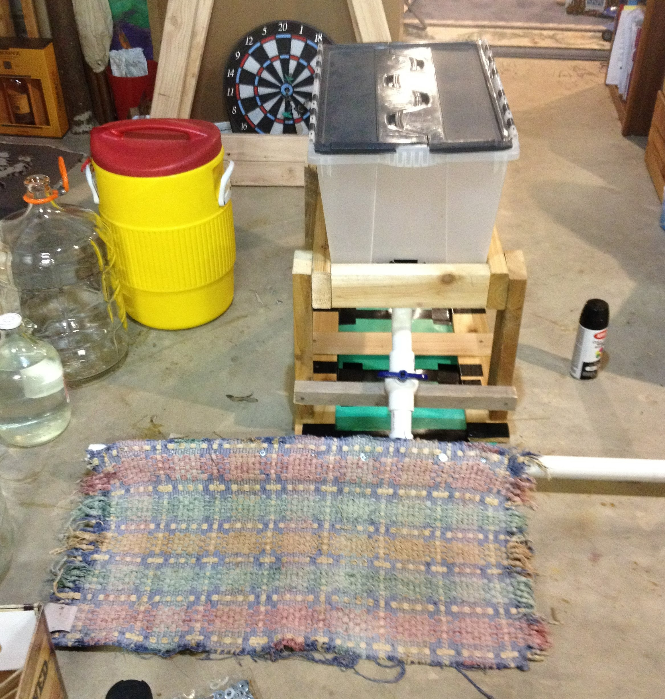
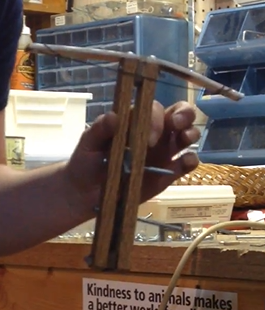
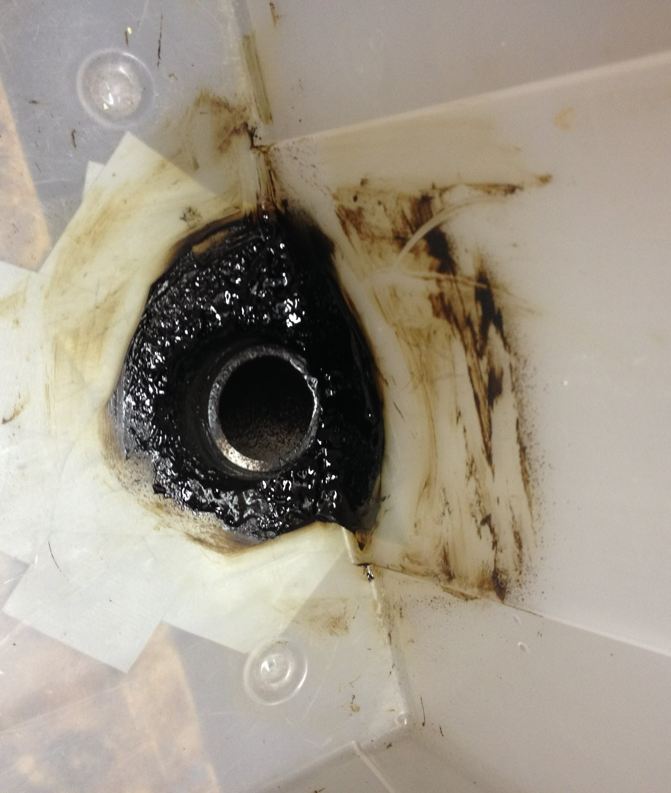

Over the years, I’ve had many strange ideas for projects and inventions. I don’t always end up making them, but when I do, the results tend to be...interesting.
-
Odd Inventions
The Budget Zamboni (Winter 2017)
-
Pencil Crossbow
(Spring 2015)I made this miniature crossbow to go in a care package for my friend at summer camp. I also sent a few pencils as ammunition so she could terrorize her fellow campers.
- 
The crossbow (Left) and firing test (Right)
-
Windmill Hat
(Fall 2013)I don’t recall why I made this hat. The string was wrapped around an internal shaft which powered the “windmill.” A long rubber band wrapped around the shaft in the other direction so it would always rotate back to its original position.
A demonstration of the hat
-
Budget Zamboni
(Winter 2017)My friend and I made this zamboni so we could play hockey on the pond behind my house. We used a storage bin, pvc pipe, a sled, a rug, and some scrap wood.
To seal the connection at the bottom of the bin, we used spray sealant.
- 
Zamboni test (Left), Building the Zamboni (TR), and the connection at the bottom of the bin (BR)